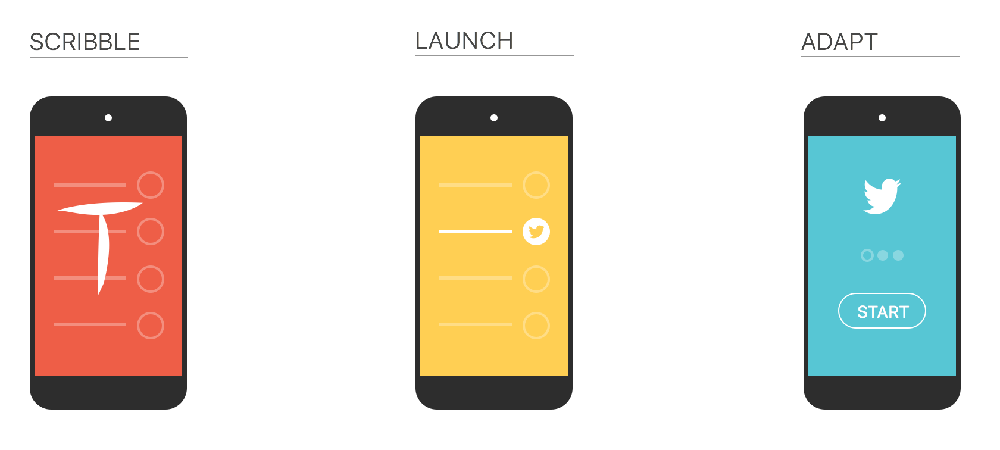
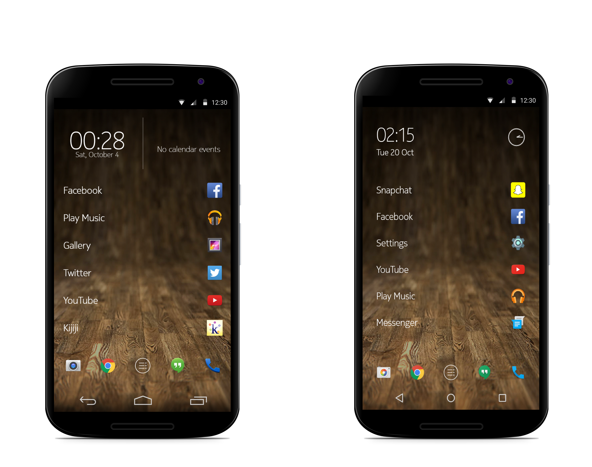
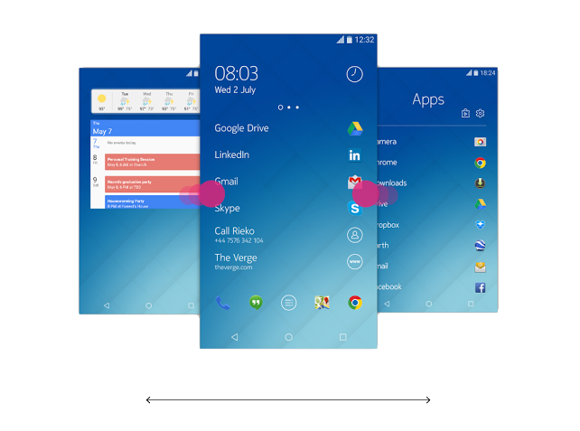

I had the pleasure of collaborating with this small team throughout the Z Launcher's beta cycle. I got to provide contextual feedback, create meaningful UI designs, and implement them personally. I also had a blast working in a team that valued my input and allowed me to take ownership of my ideas and work. Sadly I cannot share much on this project since it is still in development. I can however share some of it's existing features, the thought behind them, and my role.
Scribble a letter to find all your apps, contacts and web pages.
The UI consits of clean white lines and a minimalistic interface. This adds a delightful sense of simplicity which makes the learning curve small and accesibility easy as pie. We wanted things to feel natural for the user. The backbone of the design methodology was for the user to be able to access their content quickly and efficiently.
The launcher runs on the simple notion of: Scribble, Launch, Adapt. Due in part to my awful handwriting, I aided in the development of letter recognition features to make Z launcher more accessible for users.
What makes a great UI? This is the question we posed to users through an online survey. Most users responded with "usability" or "adaptability". One user, however, responded with "freedom" and explained that a balanced UI is what makes or breaks the experience. I took these word to heart and decided to act on them to create a more balanced and less confined Home screen Interface that invokes a better sense of flow.
Creating an innovative design is great...but, Sometimes the best design decisions are made by the users. Reading through Google Play Store comments, I interpreted that Android users mostly prefer stock Android. From this data I designed and implemented the UI and swipe gestures for widget and app drawer panes respectively. This concept is more familer to stock Android users and was very well recieved by the community.
See it in action here Z Launcher